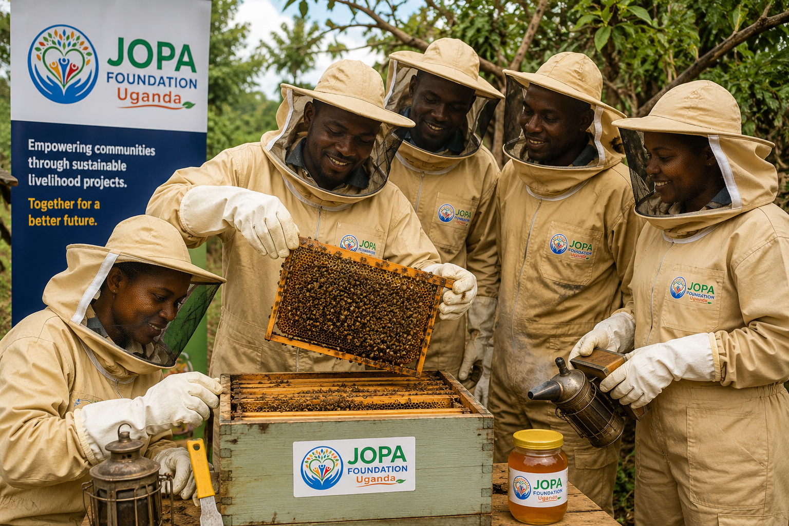
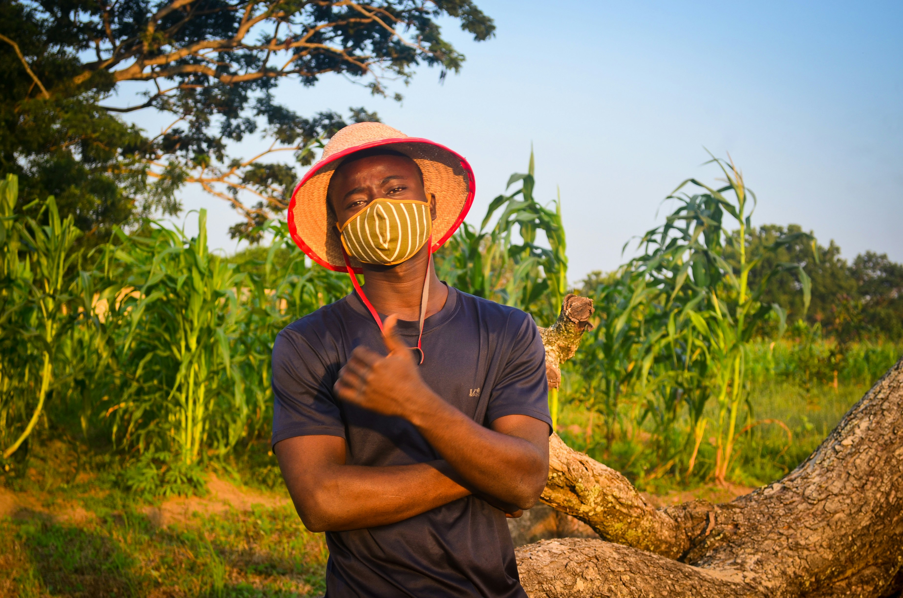
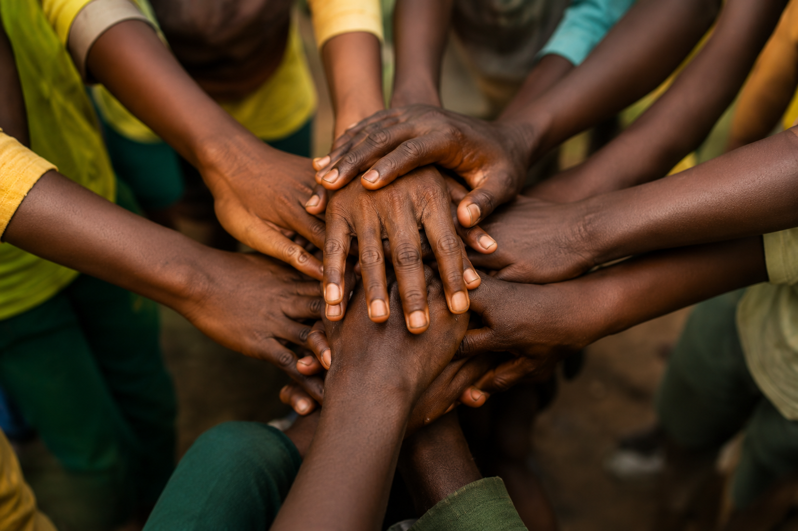

June 20, 2027
JOPA Foundation Uganda Launches Digital Skills Program
We've launched our comprehensive digital skills program targeting youth in our district, with plans to expand.
Read More →JOPA Foundation Uganda exists to promote sustainable community development through structured programs in education, leadership training, innovation, and social transformation — in accordance with its constitutional objectives.
JOPA Foundation Uganda is a community-based organization established to implement structured development programs aimed at improving livelihoods through education, leadership development, innovation, and empowerment initiatives.
The organization operates in accordance with its constitutional mandate, focusing on sustainable development across defined strategic areas guided by principles of accountability, integrity, and community participation.

Administrative District Reached
Development Projects Implemented
Youth Beneficiaries Supported
Registered Volunteers
Every gift or hour volunteered goes directly toward one of these focus areas.
Providing quality education and skills training to build a knowledgeable and capable workforce.
Equipping young people and women with skills, resources, and opportunities for success.
Promoting sustainable farming practices and ensuring food security for rural communities.
Enhancing access to quality healthcare, improving community wellbeing, and promoting environmental sustainability.
Building digital competencies to enable participation in the knowledge economy.
Three simple ways to be part of the change.
Pick the program that speaks to you most — education, health, agriculture, or any of our eight focus areas.
Support with a donation, your time as a volunteer, or a formal partnership — whatever fits you best.
We report back through our News page and impact numbers, so you can see exactly what your support achieved.

A complete beekeeping start-up building an income-generating honey enterprise for the Foundation's long-term self-reliance.
Learn More →
A 100-bird poultry enterprise generating income while demonstrating sustainable farm practices to the community.
Learn More →
Two demonstration gardens showing farmers improved growing techniques first-hand, with produce sales feeding back into our programs.
Learn More →Placeholder quotes below — swap in real testimonials from your volunteers, partners, or program beneficiaries.
Volunteering with JOPA Foundation Uganda connected me directly with the community I grew up in — I got to see exactly where my time went.

Partnering with JOPA Foundation Uganda gave our organization a trusted, on-the-ground presence in districts we couldn't have reached alone.
The agriculture training changed how my family farms — our yields have grown and so has our confidence in the future.
Join us in building hope and empowering communities across Uganda.
We've launched our comprehensive digital skills program targeting youth in our district, with plans to expand.
Read More →
Our recent health campaign reached over 2,000 community members with health screening and awareness sessions.
Read More →
We're thrilled to announce a strategic partnership that will expand our agricultural programs to new communities.
Read More →